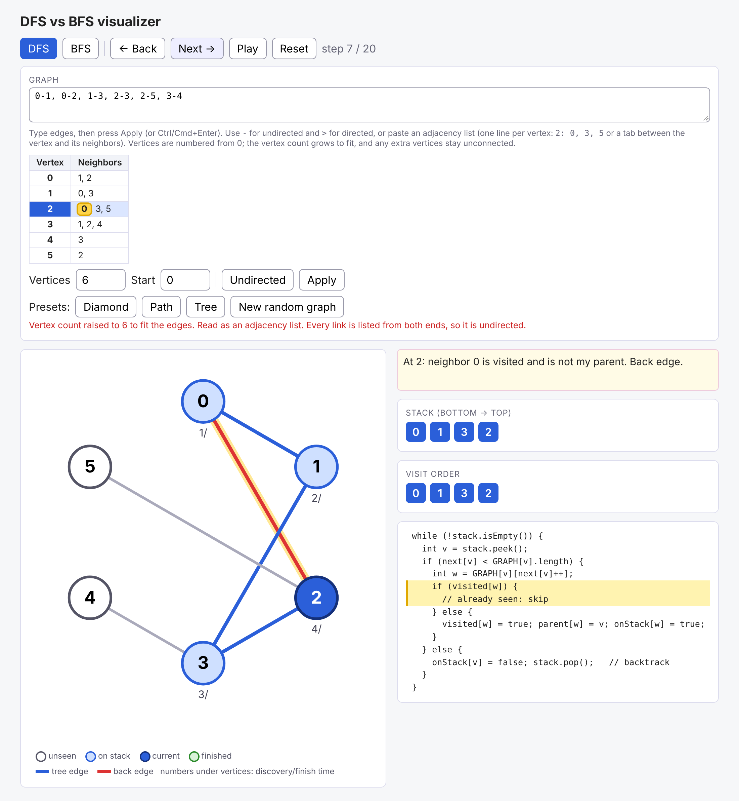

For students in the Graphs (Take 2) unit of Essential Data Structures and Algorithms in Java. The visualizer is at jsu800.github.io/DSA_Data/dfs-bfs-visualizer.html.
The visualizer runs depth-first search (DFS) and breadth-first search (BFS) on a small graph, one step at a time. At every step it shows which vertex is being processed, which neighbor is being checked, what is waiting on the stack or in the queue, the visit order so far, and the line of Java code that is running. You can type your own graph, load a preset or generate a random one, and switch between undirected and directed edges.
dfs-bfs-visualizer.html and double-click it. Everything runs inside that one file.When it opens, it shows the Diamond preset in DFS mode at step 1.
0-1, 0-2, 1-3 in the Graph box and click Apply.
| Area | What it shows or does |
|---|---|
| Top bar | DFS / BFS pick the algorithm. ← Back, Next →, Play and Reset move through the steps. The counter shows the current step and the total, for example step 7 / 20. |
| Graph box | The text of the graph as an edge list. Edit it and click Apply to load a new graph. |
| Neighbors table | The adjacency list the code uses, one row per vertex, neighbors in ascending order. It is titled Out-neighbors when the graph is directed. |
| Vertices / Start | The number of vertices (1 to 12) and the vertex the traversal starts from. |
| Undirected / Directed | Switches the edge type and reruns both algorithms. |
| Presets | Diamond, Path, Tree and New random graph. |
| Status line | Notes about what you entered (shown in red under the presets), such as "Vertex count raised to 6" or an error. |
| Graph picture | The vertices and edges, colored by state. Drag a vertex to move it. |
| Message box | A plain-English sentence describing the current step. |
| Stack / Queue | The pending vertices: stack from bottom to top for DFS, queue from front to back for BFS. |
| Visit order | Every vertex visited so far, in order. |
| Code panel | The Java loop for the current algorithm, with the line for this step highlighted. |
Type edges into the Graph box, separated by commas, semicolons or new lines, then click Apply or press Ctrl+Enter (⌘+Enter on a Mac).
| You type | Meaning |
|---|---|
0-1, 0-2, 1-3 | Undirected edges: each works both ways. |
0>1, 1>2, 2>0 (or 0->1) | Directed edges: 0>1 goes from 0 to 1 only. |
Use one style or the other, not both. Vertices are numbered from 0. If an edge uses a vertex beyond the current count, the count grows to fit; extra vertices with no edges stay unconnected. Repeated edges are merged, and self-loops such as 2-2 are ignored with a note.
You can also paste an adjacency list, one line per vertex, with a colon or tab after the vertex number:
0: 1, 2
1: 0, 3
2: 0, 3, 5
3: 1, 2, 4
4: 3
5: 2Lines that start with a letter, such as a Vertex Neighbors header, are skipped. If every link is listed from both ends, the graph is read as undirected. If some link appears from one end only, it is read as directed. The status line tells you which. After you apply, the box shows the same graph as an edge list.
| Control | What it does |
|---|---|
| Diamond | 5 vertices: 0-1, 0-2, 1-3, 2-3, 3-4. |
| Path | 5 vertices in a line: 0-1, 1-2, 2-3, 3-4. |
| Tree | 7 vertices: 0-1, 0-2, 1-3, 1-4, 2-5, 2-6. |
| New random graph | A random graph with the current vertex count. Undirected random graphs are always connected; directed ones may not be. |
| Vertices field | Changing the number (1 to 12) creates a new random graph of that size. |
| Start field | Changes the start vertex and reruns from step 1. |
| Undirected / Directed | Keeps the same edges and switches their type. Switching an undirected edge a-b to directed makes it a>b, from the smaller number to the larger. |
| Drag a vertex | Moves it in the picture. The layout is for readability only and does not change the graph. |
Presets are undirected and start at vertex 0. Load a preset first, then click Undirected to switch it to directed.
| Control | Action |
|---|---|
| DFS / BFS | Switch algorithm. The run restarts at step 1. |
| Next → or → | Forward one step. |
| ← Back or ← | Back one step. Use it to replay a step you missed. |
| Play / Pause | Advance automatically, about one step per second. Click again to pause. At the last step, Play starts over. |
| Reset | Return to step 1. |
The arrow keys work whenever you are not typing in the Graph box or a number field. Each step is one small action: visiting a vertex, checking one neighbor, or backtracking.
| Look | DFS | BFS |
|---|---|---|
| white | Not reached yet | Not reached yet |
| light blue | On the stack | Visited |
| yellow | (not used) | Waiting in the queue |
| dark blue | Current vertex | Current vertex |
| light green | Finished (popped) | Finished (all neighbors checked) |
| Look | Meaning |
|---|---|
| gray | Not examined yet |
| blue | Tree edge: the edge used to reach a new vertex |
| red | Back edge (DFS only): leads to a vertex still on the stack, which means a cycle |
| green | Forward edge (directed DFS only): leads to a finished descendant |
| orange | Cross edge (directed DFS only): leads to a finished vertex in another branch |
| yellow glow | The edge being checked at this step |
| dashed red | Being checked and not classified yet |
In directed DFS each classified edge also carries a letter: T tree, B back, F forward, C cross. BFS colors only tree edges.
Each vertex shows discovery/finish times from one counter that goes up by 1 on every discovery and every finish, starting at 1. In the screenshot, 4/ under vertex 2 means it was discovered at time 4 and is not finished yet. These are the times Exercise 3 asks for.
The highlighted line is the code that matches the current step. For example, if (visited[w]) lights up when a neighbor is already visited, and the stack.pop() line lights up when DFS backtracks.
Traversal.java.| Message | Cause and fix |
|---|---|
| Cannot read "…". Use 0-1 or 0>1. | An edge is not in a form the visualizer recognizes. Check for letters or stray symbols. |
| Cannot read the line "…" | An adjacency-list line is malformed. Use 2: 0, 3, 5. |
| Mixed edge styles. | The box contains both - and >. Use one style. |
| At most 12 vertices (numbered 0 to 11). | An edge uses vertex 12 or higher. |
| Vertices must be between 1 and 12. | The Vertices field is out of range. |
| Start must be between 0 and n−1. | The start vertex doesn't exist in the graph. |
| Vertex count raised to n to fit the edges. | Not an error: the count grew to include every vertex you used. |
| Ignored: … (self-loop) | Not an error: edges from a vertex to itself are dropped. |
| Read as an adjacency list… | Not an error: tells you whether your pasted list was read as undirected or directed. |
>, run DFS, and read the discovery/finish numbers and the T/B/F/C letters.